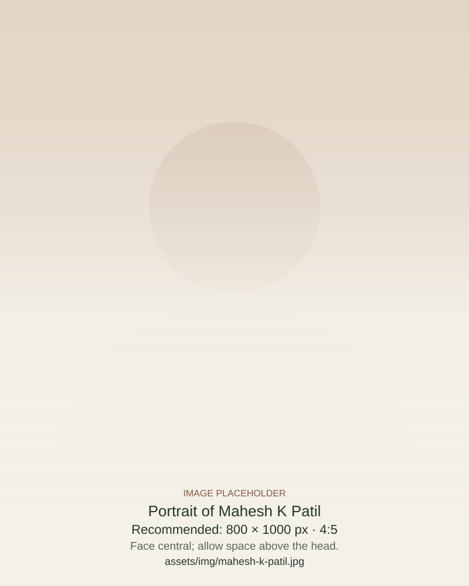
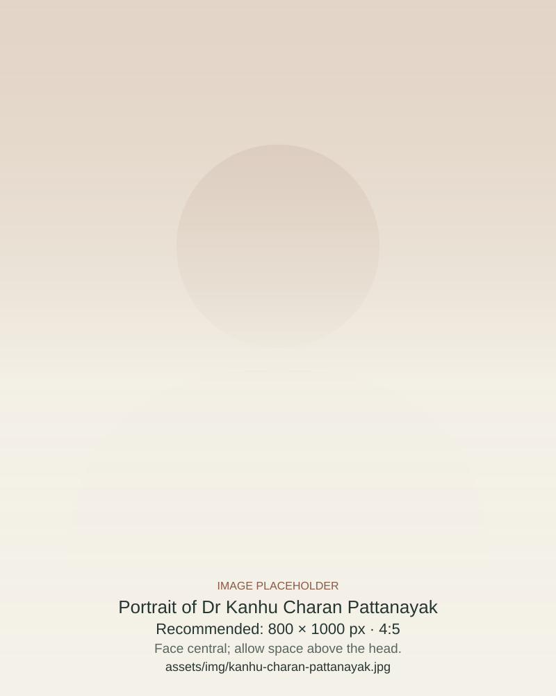
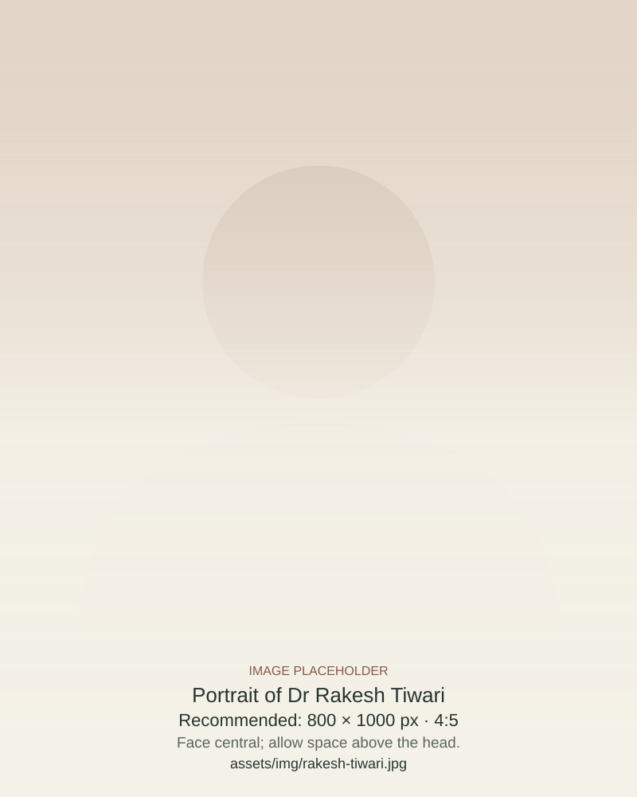
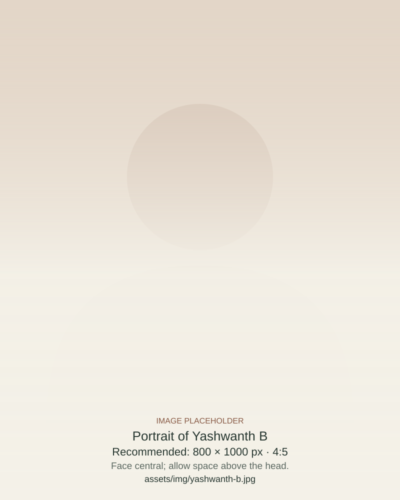
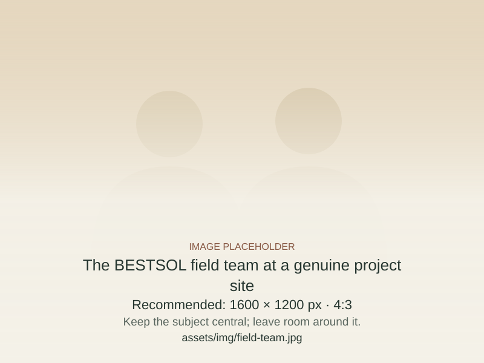

Bharati Environment and Sustainable Technology Solutions is a private limited company located at the Tumkuru Innovation Incubation & Entrepreneurship Council (TIIEC), Tumkur University.
Work with us ↗Team
Different strengths.
A shared purpose.
At BEST Solutions, we unite three core strengths to deliver credible and lasting sustainability outcomes. Guided by Adi Shankaracharya’s philosophy of oneness, our approach and technology embody harmony and purpose.
Our strengths
Act for a greener future.
Scientific rigour
Strong financial and management expertise
Our team
The people behind the work.
Athiyaman Dhanuskodi
With over three decades of leadership, he leads the Tamil Nadu wing of our NGO network. He has implemented initiatives that advance sustainable livelihoods, green villages, and community empowerment. His core strengths include developing agribusinesses, facilitating commodity sales, and implementing sustainable agriculture practices.
Mary Philomena
She is the founder of the Social Animation Centre for Rural Education and Development (SACRED) in Bidadi, Bangalore South, bringing over 25 years of rich experience in the NGO sector. Under her leadership, SACRED has become a model organization in environmental protection, sustainable agriculture, climate mitigation, and rural development. She also leads the Karnataka chapter of the Sudhaanya network.

Mahesh K Patil
A leader in environmental management and sustainability. He has served as the former Chairman of the Goa State Pollution Control Board and an expert member on key state environmental authorities. He brings over 25 years of experience in the mineral sector, holding leadership roles in multinational companies focused on occupational health, safety, and environmental regulations, and has provided strategic consulting to organizations like NITI Aayog and LEAD India.
Prof Yogendra K
Professor of Environmental Science at Kuvempu University, he is a distinguished academic leader renowned for his research in climate resilience, biodiversity conservation, and sustainable ecosystem management. His work seamlessly integrates scientific rigor with field-based applications, advancing innovative strategies that foster sustainability and long-term ecosystem health.

Dr Kanhu Charan Pattanayak
An applied climate scientist and co-founder of Cambridge Alpha brings 18+ years of expertise from institutions like the UK Met Office and University of Leeds to develop AI-native tools that convert complex climate signals into predictive insights for agriculture and commodity prices. Backed by an MBA from Cambridge and 40+ peer-reviewed publications, scalable models forecast climate-driven supply shocks with hedge-fund-grade precision, uniquely combining scientific depth and commercial clarity in our investment-grade climate intelligence.
Prof Christine Foyer
Prof. Christine Foyer is a world-leading expert in plant metabolism and stress physiology. She is President-Elect of the Association of Applied Biologists, General Secretary of the Federation of European Societies of Plant Biologists, an elected Board Member of the American Society of Plant Biologists, and a Member of the French Academy of Agriculture. She will soon take up the role of Editor-in-Chief of Food and Energy Security. Christine brings unparalleled expertise in understanding crop systems from mechanistic to landscape levels.

Dr Rakesh Tiwari
A global expert in greenhouse gas (GHG) monitoring, reporting, and verification, he has developed standardized guidelines on sampling strategies and analytical optimization for measuring direct greenhouse gas emissions from tropical rice and upland cropping systems. He also serves as an independent validator for carbon projects and is a postdoctoral researcher at Uppsala University. Rakesh is the convener of the network and the founder of BEST Solutions.

Yashwanth B
Yashwanth is a fresh engineering graduate in computer science with a background in mechanical engineering, and comes from a farming background. He is interning with us to develop farmer-oriented software solutions.
In the field
Science connects through people.
